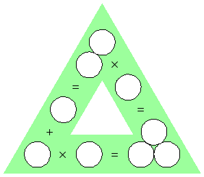
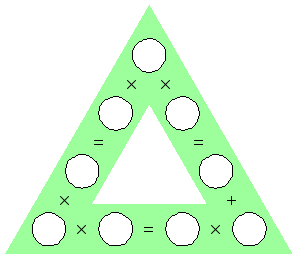

1. Equations
Place the digits 1 through 9 (each used exactly once) into the squares so that the numbers that fit inside the circles to make the equations true are the same.
2. Balancing Act
Assign the values 1 to 10 to the weights in the diagram so that everything balances as shown. Each number will be used exactly once.
3.-4. Triangle Math
Put the digits 1 through 9, each used once, into the circles so that the three equations reading left to right are true.
|  |  |
5. Path Battleships
Locate the 10 ships so that the remaining white space can be completely filled by a single, closed loop, connecting squares horizontally or vertically.
Click here for the answers.
Click here to go back to the Puzzle Palace.